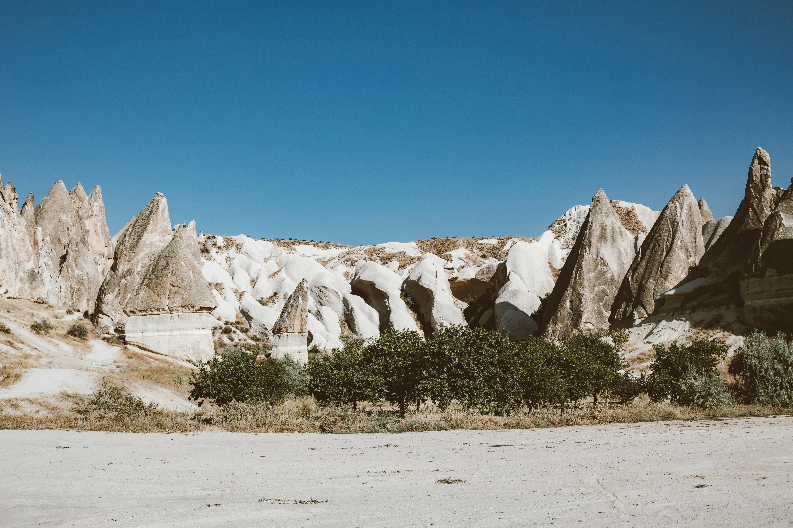

Canyons represent some of nature's most awe-inspiring architecture, carved over millennia by the persistent force of flowing water. The Grand Canyon exposes nearly two billion years of geological history in its colorful layers, with the Colorado River having carved through approximately a mile of rock over 5-6 million years. But not all canyons form slowly - some like Arizona's Canyon Lake Gorge were created in just days during catastrophic floods.
T hese vertical landscapes create unique microclimates, with temperature differences of up to 25°F between the rim and floor. This variation supports diverse life zones, from desert-adapted species at the bottom to pine forests along the rims. The deepest canyon on Earth is actually Yarlung Tsangpo in Tibet, plunging 17,567 feet - deeper than the Grand Canyon by nearly a mile.
The combination of these forces creates the dramatic vertical cliffs and sloping debris fans characteristic of canyon landscapes. Some of the most spectacular slot canyons like Antelope Canyon in Arizona are carved into sandstone by flash floods.
Canyons serve as natural laboratories for geologists, with each rock layer telling a chapter of Earth's history. The Vishnu Schist at the bottom of the Grand Canyon dates back 1.7 billion years, while the Kaibab Limestone forming the rim contains fossils from 270 million years ago. Similar to how caves preserve underground records, canyons expose vast timelines in their walls.
Explore other dramatic landscapes like volcanic regions or waterfall-carved gorges.
Return to homepage.